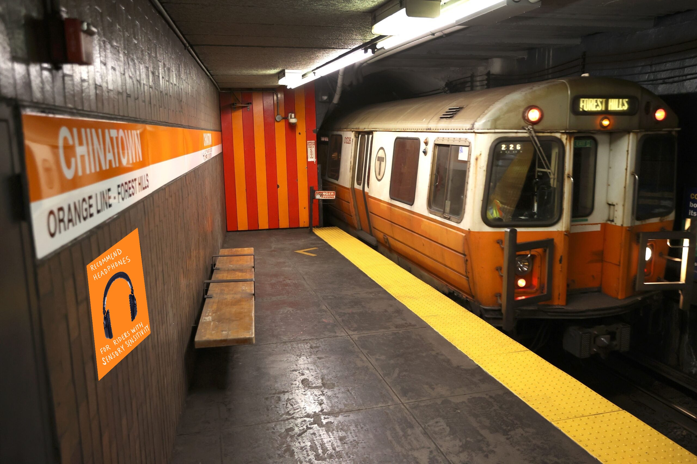

Orange Line
From the lines we assessed, the orange line had the highest vibration and sound frequencies.
Analyzing the MBTA lines has demonstrated what riders should know before boarding each T line.
The analysis of the vibration along the different T lines provides value to the riders on the T. Those with stronger sensory differences, may experience stronger discomfort from being jostled around in a seat and hearing certain frequencies of sound. To help those with sensory processing difficulties, our website demonstrates the vibration levels and audio frequencies on the different T lines so riders can either avoid the lines with high vibration frequencies and a high audio frequency or arrive prepared with items like a cushion or noise cancelling headphones. To help the passengers, this research is also to be used by the MBTA to look into which lines to focus on when revising the trains to better the passenger experience and improve train health. For the lines with the most vibration, they can consider changing the wheel size or improving the tracks. Regarding noise cancellation, the spring-mass damper systems on the suspension is a low pass filter which could be improved to cancel out the frequencies with the highest amplitude for each T line demonstrated in our analysis.
Upon further iteration, this research would expand to incorporate all the MBTA lines and conduct analysis along the entire route. Along with the differences between the old and new train cars. There were shutdowns on the green line during the time of this experiment so achieving more thorough research would allow a more reliable ranking of the T lines. Through connecting with the MBTA Director of Engineering Ryan Mahoney, the team plans to have conversations to discuss the lines we found to have the worst vibration and sound frequencies and talk about how his team can combat these issues.
From the lines we assessed, the orange line had the highest vibration and sound frequencies.

From the findings, the commuter rail had the lowest vibration and sound frequencies
Our research found consistent low-frequency oscillations of 1Hz within all lines. Oscillations at these frequencies over extended periods of time can result in discomfort, nausea, and if exposed for hours at a time, chronic back pain. Especially amongst subway operators, the rate of chronic back pain was over ten times that of an average human. It was found that ergonomic seats, with more cushion and better back support helped alleviate this, so for frequent long distance commuters, a portable seat cushion could be used to counter the amplitude and thus impact of the oscillations.
All subway lines consistently had a hearable, 47 Hz frequency as well. The commuter rail also had a hearable low frequency oscillation of 23Hz. Low-frequency sounds like these, especially with a lack of other background sounds, can cause a rise of blood pressure and general annoyance. Additionally, due to the resonance of the human body, oscillations around 50 Hz (like those found in all subway lines) creates stress on endothelial cells within the spine, potentially weakening bone structure and increasing passengers' risk of back problems if they are frequent travelers. Recommendations for commuters to avoid the health effects of these low frequency oscillations would be to wear ear protection in commute to counter how many noises are perceived. Additionally, since the annoyance and increase in blood pressure from low-frequency sounds can be alleviated if there is other background noise, even listening to a podcast or music in commute can help a commuter avoid stress or the negative health effects from hearing the frequencies. In order to combat the potential spine damage caused by the oscillations along the subway lines, using a portable seat cushion or standing more frequently on the line if able could help the commuter combat the effect of the vibrations on the strength of their spine. However, if the commuter doesn’t use the rail network for multiple hours a day, they are probably at no risk of any health effects, as 50 Hz vibrations only have serious health effects from prolonged, consistent exposure.